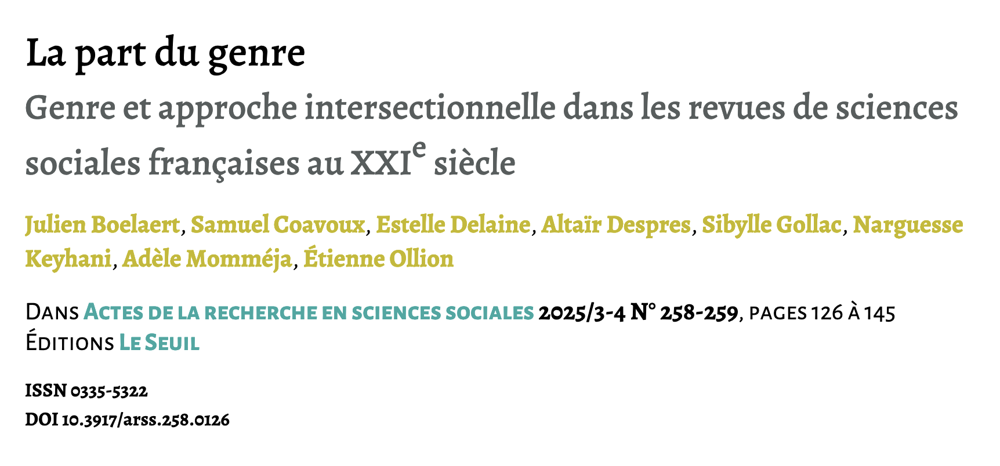
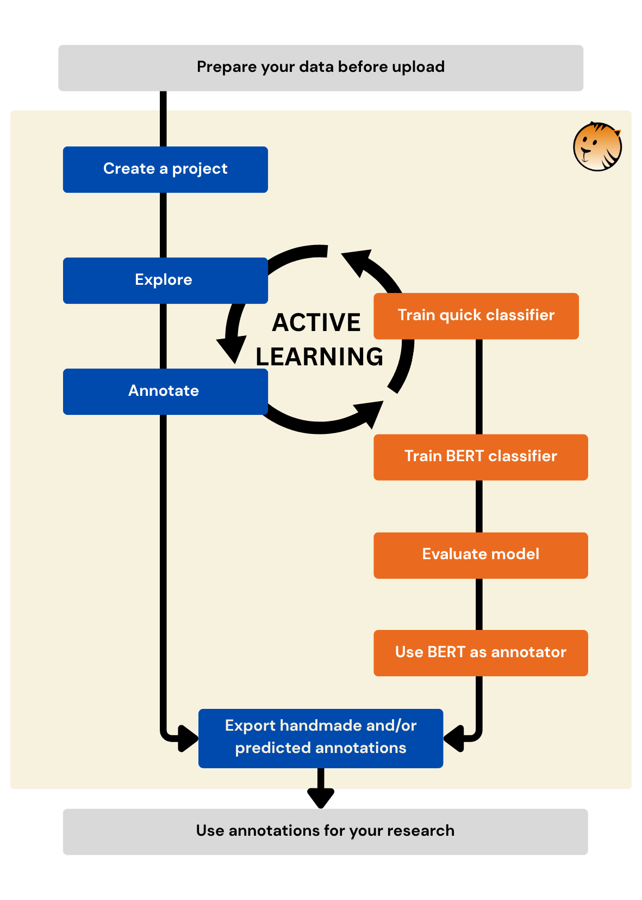
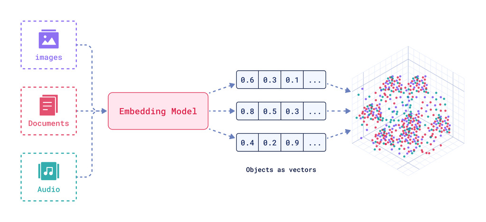

Active Tigger
CLASSIFICATION & EXPLORATION DE CORPUS TEXTUELS
L’IA A L’HEURE DES SHS ET DE L’APERO
7 mai 2026
Petit tour de table
- L’équipe d’Active Tigger
- Vous :
- Déjà été confronté.e.s à des corpus textuels ?
- À des outils de textométrie ? de NLP ?
- À’utilisation de modèles / IA ?
Objectifs de la présentation
- Pourquoi Active Tigger ?
- CSS & NLP
- Principales fonctionnalités d’Active Tigger
- Notions fondamentales (embeddings, etc.)
- Comment se lancer
- Discussion
- Usages spécifiques
- Evolution de nos pratiques
Origines d’Active Tigger
- Pour les pratiques avancées/spécifiques : le code
- Question : démocratiser des usages stabilisés ?
- Annoter des grands corpus avec un ensemble de labels
- Besoin de collaborer sur un projet
- Faciliter la formation aux outils
- Démonstrateur en R (É. Ollion et J.Boelaert en 2023)
- Mettre à l’échelle et constituer une communauté de pratique
- open source / reproductibilité
Un outil ancré dans la recherche
Groupe CSS@IPP au CREST
- Le prix de la visibilité. Une analyse computationnelle des interactions en ligne avec des député·es français·es. Revue française de science politique, Claesson A., 2025
- La part du genre. Genre et approche intersectionnelle dans les sciences sociales françaises au XXIe siècle, Boelaert J. et al, 2025.
Communauté plus large en formation
- Identifier les articles de presse qui parlent de l’environnement (Jules Brion)
- …
Situation actuelle
Presque une V1 + communauté d’utilisateurs instance dev. du CREST
Pour toute info : emilien.schultz[at]ensae.fr
Des contributions multiples
- Comité Scientifique
- Développement interne
- Soutien par Ouestware (Paul Girard)
- Beaucoup de retours des utilisateurs : Merci !
Introduction pratique par une démo
Comment évolue la prise en compte des réflexion sur le genre dans la littérature en sciences sociales françaises ?

Données: Abstract des articles de sciences sociales publiés dans des revues françaises entre 2000 et 2022.
Logique générale
TL;DR : Mettre un label “genre”/“pas genre” sur un gros volume d’abstracts
- Travail conceptuel pour définir les concepts
- Construire un échantillon d’éléments annotés
- En maximisant la diversité et en limitant le temps passé
- Entrainer un classifieur pour prédire
- Améliorer suffisamment ce classifieur pour nos objectifs
- L’appliquer à l’ensemble du corpus
- Télécharger les résultats
Pourquoi Active Tigger ?
Tout peut être fait avec un tableur et du code
- Facilier l’interaction avec les données
- Travail en collaboration
- Contraindre les étapes pour garantir la progression
- Avoir de l’active learning pour annoter plus vite
- Accès à des ressources GPU en fonction de l’instance
- Traitement en volume (encodeurs assez légers)
Étapes principales

D’autres fonctionnalités
- Explorer avec Bertopic
- Sélectionner avec la projection
- Utiliser les prédictions des BERT pour l’active learning
- Comparer les annotations entre utilisateurs
- Expérimenter avec le génératif
Au commencement : des données
Tout un travail en amont : mettre en forme les données dans un tableau (pas dans Active Tigger)
- ~30,000 articles, découpées au niveau de la phrase = 50,000 lignes
- Métadonnées présentes: revue, discipline et la proportion d’hommes/femmes dans les co-auteur.ices
- Une colonne d’annotations utilisées comme “gold-standard”
Étape centrale : le codage
Travail conceptuel : différentes conception du genre
- Quelles sont les catégories ?
- Expérimenter
Choix d’une conception large : à la fois rapports de genre, mention des aspects genrés dans les processus sociaux, etc.
Une étape qui n’en est pas une : stabilisation progressive
Séparer l’entrainement et l’évaluation
Notion de jeu de données complet, d’entrainement (train) et d’évaluation (validation / test)

Source : Renesh Bedre — How to Split Data into Train and Test Sets in Python with sklearn
Passage à la démo
- Projet déjà créé
- Comptes accessibles ici sur une instance démo : https://shorturl.at/0gNFH
(vous pouvez créer des projets aussi, mais si on est nombreux ralentissements possibles)
Démo
Se lancer
- Se lancer dans un projet
- Venir discuter sur le Discord
- Réfléchir à la prochaine étape
- Les modules à développer
- Ouvrir de nouvelles instances
Annexe : notions
Embeddings
Embeddings/plongements = représentations vectorielles d’une entité avec un modèle entrainé à conserver l’aspect sémantique.

Source Joel Barnard — What is embedding? Manoj Kumar — Explain vector embeddings to your mom
Apprentissage supervisé
- Données d’entraînement : des exemples annotés par l’humain
- Apprentissage : un modèle (des poids) progressivement modifié pour améliorer la prédiction sur ces données
- Prédiction : à partir d’une nouvelle entrée, prédire la valeur
- Évaluation : vérifier la qualité de la prédiction
- Différentes métriques suivant la tâche
- Sur des données initialement non utilisées pour entrainer
Active Learning
Plutôt que d’annoter au hasard, sélectionner certains éléments
- Départ : entrainer un modèle sur un petit nombre d’annotation
- Identification des éléments les plus incertains
- Prioriser ces éléments
- Réentrainer le modèle & itérer
Pourquoi c’est utile ?
- Moins d’étiquetage : réduire le travail humain
- Datasets de meilleur qualité : limiter la redondance de l’information
Classifier BERT
Une architecture particulière de modèle préentrainés (transformers) de type encodeurs de taille “raisonnable”.

Source: Jay Alammar — The Illustrated BERT, ELMo, and co. (How NLP Cracked Transfer Learning)
Quick et BERT modèles
Des types différents de modèles
- Le nombre de poids : quick = centaines de paramètres ; BERT = centaines de millions
- Le pré-entrainement : quick = entrainé juste sur les données ; BERT = pré-entrainés sur de très gros corpus
- Le temps d’entraînement : <2 min pour les quicks et jusqu’à plusieurs dizaines de minutes pour les plus gros modèles BERT